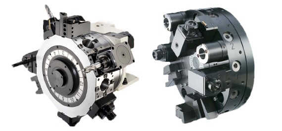

Physically CNC lathe machine is a simple lathe machine with CNC controls panel equipped with it. Internally all the functionality of cnc lathe machine it controlled through cnc control.
You might like What is CNC? a CNC Machinist Perspective for Newbies in Workshop
CNC Lathe Main Parts
cnc lathe machine main parts introduction
1 – Headstock
Headstock of a cnc lathe machine have the main motor of cnc lathe machine which drives the main spindle. Chuck is mounted on this main spindle.
cnc lathe headstock
Here is another cnc lathe machine, the headstock covers are removed, so you can see the Main drive (Main Motor), Gears. Gears can be selected with the cnc programming instructions (M41,M42,M43)
2 – CNC Lathe Bed
The tool turret travel over the cnc lathe bed, which is specially hardened so any kind of machining can’t affect them.
3 – Chuck
CNC lathe machine chuck grips the component which are to be machined. Chuck itself has many parts. Jaws are mounted on the chuck to grip the part, you might read more about jaws here CNC Machine Jaws an Introduction for CNC Lathe Machinist.
cnc lathe chuck with jaws
4 – Tailstock
Tailstock are mostly used to give an extra gripping force for component machining. For long components machining they provide extra force on the other end so machining process can complete smoothly. You can see in the above picture at the one end chuck is gripping the component and on the other end tailstock is providing the extra force.
5 – Tailstock Quill
Actually you move the whole tailstock forward or reverse, but in that way it is not used to grip the part, but tailstock is travelled to a point near the component and then it is set there, after that you actuate the tailstock quill which travel either with hydraulic pressure or pneumatic pressure to grip the component.
6 – Foot Switch or Foot Pedals
Foot switches are used to actual the chuck and tailstock quill. Through these pedals cnc machinist’s open and close the chuck to grip the component, the same way tailstock quill is taken to forward position or reversed through theses pedals.
cnc lathe foot switches or Pedals
7 – CNC Control Panel
The brain of the cnc machine, all the cnc program are stored inside this panel, cnc machinists control the whole machine through the keys on this panel. CNC machinists stat/stop the machine move axis by pressing different keys on this panel.
Learn G Code Programming
They can enter new program by using this panel, programs can be transferred by using usb port on this panel as well. So this is the main part which controls the whole cnc machine.
8 – Tool Turret
The tool are mounted on the tool turret which are used for component machining. Tool turrets vary in shapes and number of tools that can be mounted on them.
